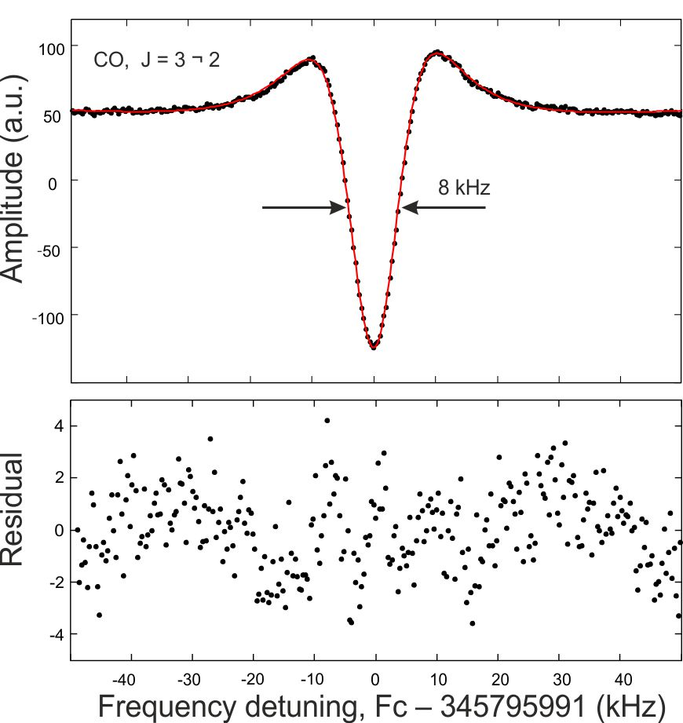

|  |
Record of the CO J=3 → 2 line, frequency modulation and 2f detection was used. Observed values are denoted by points, the line represents the fit to Doppler profile with Lorentz (Voigt) shape Lamb dip. Line center is Fc = 345795990.5 ±0.34 kHz ; pressure in the cell was P< 1 mTorr at room temperature. The bottom trace is residuum of the fit. |

|
Lamb-dip record of the 41,4→32,1 transition of H216O. The hf -components (F' → F”): 5 → 4 (380 197.332 MHz), 4 → 3 (380 197.347 MHz), 3 → 2 (380 197.403 MHz) and cross-over resonances C4,3 → C3,3 (380 197.426 MHz) and C3,3 → C3,2 (380 197.452 MHz) are shown. See [Ref. 11 (2006)] |